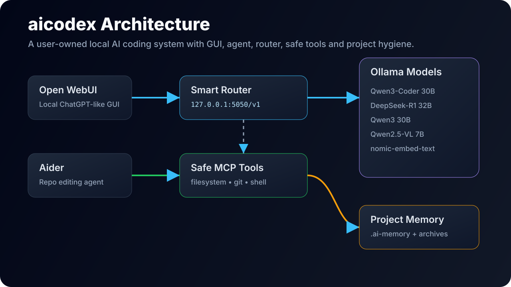

01 · Why
The hard part is not only generating code
Modern coding agents can explain repositories, plan migrations, repair tests, and edit across multiple files. The harder product problem is making that capability installable, understandable, recoverable, and trustworthy on a developer's own Mac.
AI Codex approaches that problem as a local-first workspace rather than a loose collection of scripts. It separates a clean conversational Work view from operational detail in Activity, command output in Terminal, and task-owned diffs in Changes.
02 · One composer
Ask, Plan, and Code are behavior boundaries
Developers should not have to classify every message manually. A question can turn into a plan, and a plan can turn into a change. AI Codex routes requests to Ask, Plan, or Code automatically, but the important detail is that these modes are enforced below the prompt.
- Ask investigates and discusses the repository without write tools.
- Plan develops an implementation plan while staying read-only.
- Code can inspect, edit, validate, and report a task-owned diff.

03 · Local architecture
A native app in front of an owned localhost service
The SwiftUI application owns the developer experience and macOS permission chain. The user chooses a project explicitly, and the app uses security-scoped access instead of silently reading arbitrary folders.
The Python service owns task state, model routing, repository indexing, typed tools, change tracking, validation, diagnostics, reset, support bundles, and updates. It binds to localhost and requires an authenticated API credential stored in Keychain when available.
SwiftUI desktop app
-> authenticated localhost Python service
-> Ollama coding, vision, and embedding models
-> optional ComfyUI FLUX image generation04 · Local intelligence
Model choice is a routing problem
AI Codex defines hardware-aware model profiles. Efficient targets 16 GB systems and smaller tasks. Balanced targets 24 GB or larger systems and multi-file work. Maximum targets 48 GB or larger systems and demanding architecture or refactor tasks.
Optional specialist models add more capability: qwen2.5vl:7b for screenshot and image understanding, nomic-embed-text for semantic repository retrieval, and FLUX.1 Schnell FP8 for local image generation through a private ComfyUI runtime.
05 · Reversible edits
Automatic edits need stronger undo, not endless dialogs
Per-file approval can look safe, but during a coherent multi-file change it often trains users to click through prompts. AI Codex applies routine in-project edits automatically, then strengthens the rollback model around those writes.
Before editing an existing file, the task reads it and records its content hash. Multi-file operations validate paths and baselines before writing. Changes are tracked as task-owned, separate from pre-existing Git work. Undo All, Undo File, and Undo Hunk refuse to overwrite later edits by the developer or another process.
06 · Safety boundary
Safety belongs below the prompt
A local model can still make unsafe decisions, and repository content can still contain malicious instructions. AI Codex treats prompts as guidance, but authority is enforced in code.
- File paths must remain inside the selected project.
- Symlink traversal and known credential paths are rejected.
- Ask and Plan cannot invoke write tools.
- Model-provided commands never run through a shell string.
- Validation commands must match an argument-array allowlist.
- Prompt-injection patterns are surfaced in Activity.
- Git staging, commits, resets, pushes, deletion, dependency installation, and network actions are separate operation classes.
07 · Install and recover
Installation and recovery are product features
The installer creates an isolated Python runtime, installs the CLI, initializes owned storage, runs diagnostics, configures service recovery, builds the native app, and preserves the previous app during replacement.
Recovery is intentionally bounded. Settings and CLI commands expose setup readiness, model inventory, service lifecycle, repair, redacted support bundles, and granular reset targets for cache, logs, runtime, state, and indexes. Developer project files are not reset targets.
08 · Updates
The updater fails closed until a real trust chain exists
The repository implements a transactional update design, but production distribution is intentionally not preconfigured. A real release needs Developer ID signing, Apple notarization, a permanent offline Ed25519 signing key, and an HTTPS update host.
Before installation, an update must pass manifest signature, key ID, HTTPS, artifact size, SHA-256, archive safety, Developer ID, Gatekeeper, and notarization checks. Failed post-install health checks restore the previous snapshot automatically.
This matters because a local coding agent holds significant authority over source files. Distribution trust should be as deliberate as runtime tool safety.
09 · Takeaway
Trust is the real product feature
AI Codex is not just an attempt to make a local model write code. It is a study in the surrounding product system: project permission boundaries, clean conversation, visible activity, local context retrieval, reversible edits, validation, service lifecycle, diagnostics, and recoverable failure.
The most useful coding agent is not simply the one that produces the most code. It is the one a developer can understand, correct, recover, and keep working with every day.